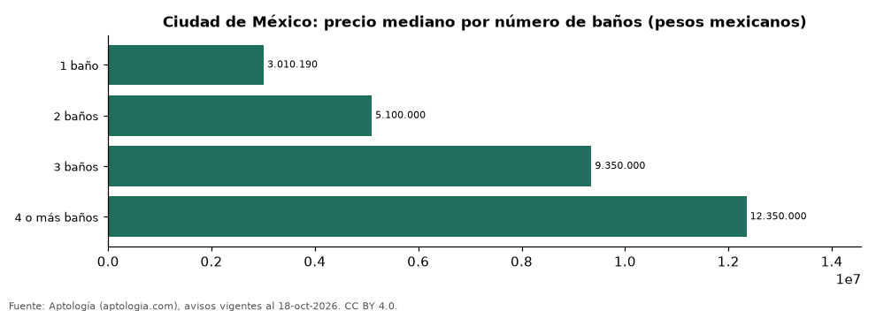

Departamentos en venta en Ciudad de México según número de baños: precio y m² de cada grupo (octubre 2026)
Estudio con datos abiertos (CC BY 4.0). Versión original: https://github.com/elbroker/aptologia-datos/tree/main/estudios/departamentos-en-venta-por-numero-de-banos-ciudad-de-mexico-2026 · DOI: 10.5281/zenodo.23517718
En Ciudad de México, un departamento en venta del grupo «1 baño» se pide en 3.010.190 pesos mexicanos (USD 163.017) en la mediana y uno del grupo «4 o más baños» en 12.350.000 pesos mexicanos (USD 668.817) (+310,3 %). Por metro cuadrado, el más barato es «1 baño» (48.086 pesos mexicanos (USD 2.604)/m²) y el más caro «2 baños» (54.437 pesos mexicanos (USD 2.948)/m²).
Resumen: analizamos 7.799 departamentos en venta en Ciudad de México con número de baños declarado.
Actualizado: 18 de octubre de 2026 (datos del 18 de octubre de 2026) · Próxima actualización: mensual.

Resumen
| Indicador | Valor |
|---|---|
| 1 baño | 3.010.190 pesos mexicanos (USD 163.017) |
| 2 baños | 5.100.000 pesos mexicanos (USD 276.191) |
| 3 baños | 9.350.000 pesos mexicanos (USD 506.351) |
| 4 o más baños | 12.350.000 pesos mexicanos (USD 668.817) |
| Avisos | 7.799 |
Precio y m² por número de baños
| Número de baños | Precio (mediana) | Rango típico (P25–P75) | Por m² (mediana) | Área mediana (m²) | Avisos |
|---|---|---|---|---|---|
| 1 baño | 3.010.190 pesos mexicanos (USD 163.017) | 2.300.000 pesos mexicanos (USD 124.557) – 3.890.500 pesos mexicanos (USD 210.691) | 48.086 pesos mexicanos (USD 2.604) | 61 | 1.532 |
| 2 baños | 5.100.000 pesos mexicanos (USD 276.191) | 3.915.900 pesos mexicanos (USD 212.066) – 6.632.800 pesos mexicanos (USD 359.201) | 54.437 pesos mexicanos (USD 2.948) | 90 | 5.143 |
| 3 baños | 9.350.000 pesos mexicanos (USD 506.351) | 6.947.212 pesos mexicanos (USD 376.228) – 13.000.000 pesos mexicanos (USD 704.017) | 53.470 pesos mexicanos (USD 2.896) | 171 | 944 |
| 4 o más baños | 12.350.000 pesos mexicanos (USD 668.817) | 8.298.550 pesos mexicanos (USD 449.410) – 15.663.244 pesos mexicanos (USD 848.246) | 51.642 pesos mexicanos (USD 2.797) | 222 | 180 |
Medianas del precio pedido; grupos con menos de 30 avisos se omiten.
Preguntas frecuentes
¿Cuánto cuesta comprar un departamento con cuántos baños en Ciudad de México? 1 baño: 3.010.190 pesos mexicanos (USD 163.017); 2 baños: 5.100.000 pesos mexicanos (USD 276.191); 3 baños: 9.350.000 pesos mexicanos (USD 506.351); 4 o más baños: 12.350.000 pesos mexicanos (USD 668.817) (medianas de octubre de 2026).
¿Qué grupo sale más barato por m²? Por metro cuadrado, el más barato es «1 baño» (48.086 pesos mexicanos (USD 2.604)/m²) y el más caro «2 baños» (54.437 pesos mexicanos (USD 2.948)/m²).
Metodología
- Fuente: exportes nocturnos de la base de datos de Aptología (aptologia.com) del 18 de octubre de 2026: avisos vigentes de vivienda en portales inmobiliarios de 13 países, recogidos por Aptología y vistos en línea entre el 11 y el 18 de octubre de 2026. Corte: 18 de octubre de 2026.
- Depuración: se eliminan duplicados exactos (misma ciudad, zona, tipo, precio, moneda, área, habitaciones y baños) y los precios fuera del percentil 1–99 de cada país, operación, moneda y tipo; el precio por m² usa solo avisos con área declarada entre 12 y 2.000 m² y también se recorta al P1–P99.
- Qué se mide: precios pedidos (publicados), no precios de cierre. En arriendo, el canon mensual sin administración, gastos comunes ni condominio.
- Muestra mínima: cada cifra publicada se apoya en al menos 30 avisos; las celdas con menos se omiten.
- Monedas: nunca se mezclan avisos de monedas distintas sin convertirlos. Conversión a dólares con la tasa de mercado de ExchangeRate-API (open.er-api.com, actualización del 18 Oct 2026): 1 USD = 3.182,80 COP, 1 USD = 18,47 M.N, 1 USD = 5,09 BRL, 1 USD = 3,44 PEN, 1 USD = 982,44 CLP, 1 USD = 1.514,57 ARS, 1 USD = 40,20 UYU, 1 USD = 5.705,37 PYG, 1 USD = 61,27 DOP, 1 USD = 0,89 EUR, 1 USD = 11,72 BOB; la UF chilena a 41.178,64 CLP (mindicador,cl. 18-oct-2026). Los avisos publicados en dólares se usan tal cual.
- Monedas: en cada ciudad y operación se usa solo la moneda mayoritaria de los avisos (los avisos en otra moneda se excluyen) y la mediana se convierte a dólares con la tasa citada; nunca se promedian avisos de monedas distintas.
- Cordura: solo se publica si la mediana crece con número de baños.
- Limitaciones: la cobertura depende de los portales que recorre Aptología en cada país y es mayor en las ciudades grandes y en los segmentos medio-alto y alto; el área es la que declara el aviso, sin verificar; los nombres de zona vienen de los portales.
- Privacidad: solo se publican agregados; no se publica ningún dato personal, enlace a avisos ni nombre de anunciante.
- Datos abiertos: datos.csv, licencia CC BY 4.0.
Cómo citar
Pinzón Pineda, D. M. (2026). Departamentos en venta en Ciudad de México según número de baños: precio y m² de cada grupo (octubre 2026). Aptología (aptologia.com). https://github.com/elbroker/aptologia-datos/tree/main/estudios/departamentos-en-venta-por-numero-de-banos-ciudad-de-mexico-2026. Datos: datos.csv, licencia CC BY 4.0.